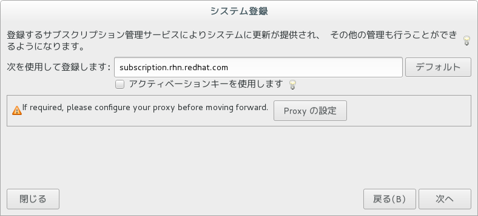

OSを変えて再挑戦
前回はFedora 24のインストールに失敗しました。 Fedora 23に挑戦してもよいのですが、Red Hat Enterprise Linuxが開発目的なら無料で使えるようになったことを知ったので、それを試すことにしました。 まずは下記のページに移動します。
入手には無料のユーザ登録が必要なのでページ上部のREGISTERから登録を。 登録後、トップページを開き。
ちょっと派手なページ
TECHNOLOGIESからRed Hat Enterprise Linuxを選択。
最後に、**Download the Red Hat Enterprise Linux Server DVD .iso file.**をクリックしてisoファイルをダウンロードします。4GB近くあるので待機。 バージョンは7.2でした。なお64bit版しかない模様。
インストール
の前に、USBメモリにISOを展開しますが、前回使った、Universal USB Installerの一覧にRedhatは存在しない模様。 ところが、Red Hatの公式で、USBインストーラの作成方法を公開していました。

{kind=link}
{kind=link}
{kind=link}
手順は上に従うだけです。 USBインストーラ作成ツールのためだけに、インストーラが走るのは気に入りませんが…終わったら消します。はい。 作成が完了したら、再びUSBメモリをNUCに差し込み起動します。 しばらくすれば、Install Red Hat Enterprise Linux 7.2という文字列が出てくるので選択してEnterを押します。 そのあとは、基本画面に従えばインストールは簡単に進みます。 パーティションはデフォルトで、ユーザは別に作らなくてもいいかと。 ただし、構成はサーバー (GUI使用)でインストールします。でないとGUIがないのかも(未確認)。 ウィザードに従って、インストールが完了すると再起動します。 再起動後、コンソールで下記のような画面になります。 [code lang=”sh”] Initial setup of Red Hat Enterprise Linux Server Linux 7.2 (Maipo) 1) [!] License information 2) [x] User creation (License not accepted) (No user will be created) Please make your choice from above [‘q’ to quit | ‘c’ to continue | ‘r’ to refresh]: [/code] 非常にわかりにくいですが、ライセンスの許諾を求められているので、1を入力してEnter。 さらに次の画面に遷移します。 [code lang=”sh”] License Information
- Read the License Agreement
[ ] 2) I accept the licnese agreement.
Please make your choice from above [‘q’ to quit | ‘c’ to continue | ‘r’ to refresh]: [/code] 1を押下してライセンスを読んだ後、2、Enterと押下 して x マークをつけてから、c、Enterと押下してライセンスの許諾に同意します。 そして、最初の画面に戻り、license not acceptedがlicense accepterdに変わるので、 c、Enterと押下して確定します。 そして、待ち望んだRed Hatのデスクトップが起動します。デフォルトのGNOMEの洗練されたデザインが出迎えてくれます。 ネットワークの設定は、画面左上のアプリケーションのシステムツール->設定->ネットワークから設定できます。Windowsのネットワーク設定が使用できれば楽勝です。
サブスクリプションの登録
これをやらないと何もできないようです。 どうもRHELは、サブスクリプションを登録することで、各種パッケージの追加を行うyumのリポジトリを使用できるようになる模様。 このままでは、依存解決とかが非常に面倒です。 なので、登録を実施します。 アプリケーションのシステムツール->Red Hat サブスクリプションマネージャーを起動します。 root認証後、下記のダイアログが表示されます。 まず登録を押下します。
{kind=link}
rootが必要
次へを押下します。

{kind=link}
RHELをダウンロードするときに作成したアカウント情報で認証します。
{kind=link}
{kind=link}
{kind=link}
Conclusion
Linuxは面倒ですね。でもデスクトップが洗練されているRHELは結構とっつきやすいです。